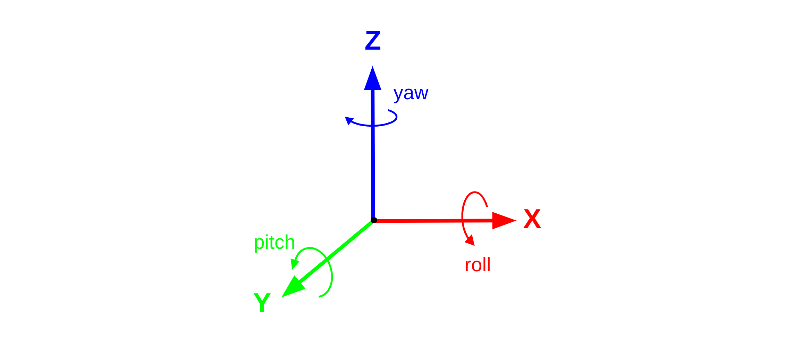
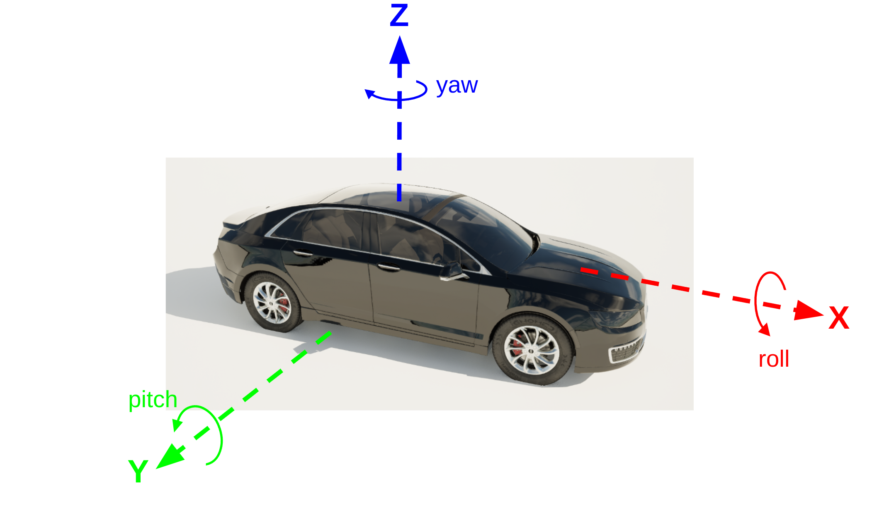

坐标和转换
本页详细介绍了 HUTB 中使用的坐标约定以及如何通过 HUTB Python API 处理坐标。
全局坐标
HUTB 基于虚幻引擎 4.26 版本构建，并采用相同的左手坐标系。您可以在 模拟引擎文档 中了解更多关于 虚幻引擎坐标系 的详细信息。
对于站在原点、面向 X 轴正方向的观察者，适用以下关系：
- X - 前
- Y - 右
- Z - 上


在 HUTB API 中，距离以米为单位测量，角度以度为单位测量。因此，当 HUTB 与其他可能使用右手坐标系、角度使用弧度、距离使用厘米或英制单位的应用程序交互时，进行相关的单位转换至关重要。
Actor 坐标
车辆和其他 actors（如行人）都有自己的局部坐标系，以帮助保持局部一致的坐标关系，例如传感器位置。
按照惯例，HUTB 车辆的设置方式为：车头指向 X 轴正方向，车身右侧指向 Y 轴正方向，车顶指向 Z 轴正方向。车辆坐标系的中心通常靠近 X 轴和 Y 轴方向的边界框中心，并且非常靠近 Z 轴方向边界框的最低面。

HUTB 行人模型的设置方式也类似，行人面向 X 轴正方向，右臂指向 Y 轴正方向，头部指向 Z 轴正方向。通常情况下，行人模型的坐标中心在静止状态下位于边界框的中心。
通过 HUTB API 处理坐标：
HUTB API 具有多个用于处理坐标和坐标变换的实用对象。
位置 Location
Location 对象 用于定义坐标，并在变换中或在生成或移动对象和 Actor 时检索或应用这些坐标。
以下代码展示了如何创建一个位置对象，表示 X=10m、Y=10m、Z=1m 处的坐标：
# 带位置参数的默认构造函数
location = carla.Location(10,10,1)
# 使用关键字参数
location = carla.Location(x=10,y=10, z=1)
# 不带参数的默认构造函数
location = carla.Location() # x=y=z=0
可以省略任何或所有关键字参数，相关轴的值将设置为零。
旋转
Rotation 对象 用于定义 HUTB 坐标系中的旋转。旋转以度为单位，顺序为俯仰角、偏航角 和 横滚角。而虚幻引擎旋转是偏航、俯仰、横滚。
以下代码展示了如何创建一个旋转对象，使其横滚角为 10 度，俯仰角为 10 度，偏航角为 90 度：
# 带位置参数的默认构造函数
rotation = carla.Rotation(10,90,10) # 俯仰, 偏航, 横滚
# 使用关键字参数
rotation = carla.Rotation(pitch=10, yaw=90, roll=10)
# 不带参数的默认构造函数
rotation = carla.Rotation() # pitch=yaw=roll=0
可以省略任何或所有关键字参数，相关角度将设置为零。
变换 Transform
HUTB Transform 对象 用于包含有关对象姿态的所有信息，包括其 3D 位置和旋转。可以使用 Location 和 Rotation 创建一个新的 Transform 对象：
# 设置位置和旋转
location = carla.Location(10,10,1)
rotation = carla.Rotation(yaw=90)
# 创建变换
transform = carla.Transform(location, rotation)
此变换可用于生成诸如车辆之类的 actor：
vehicle = world.spawn_actor(vehicle_bp, transform)
可以使用 get_transform() 方法查询 actor 的变换，并访问其关联的位置和旋转属性：
print(vehicle.get_transform())
print(vehicle.get_transform().location)
print(vehicle.get_transform().rotation)
>>>Transform(Location(x=10, y=10, z=1.0), Rotation(pitch=0.0, yaw=90, roll=0.0))
>>>Location(x=10, y=10, z=1.0)
>>>Rotation(pitch=0.0, yaw=90, roll=0.0)
transform 对象提供了一些实用函数，用于将变换应用于其他坐标。可以使用 transform() 方法将与变换关联的平移和旋转应用于 Location 或 Vector。此方法用于将变换父对象（例如车辆或其他 actor）局部坐标系中的点转换为全局坐标系中的点。例如，要查找安装在车辆上的传感器在全局坐标系中的位置：
sensor_local_coord = carla.Location(1,0,0)
vehicle_transform = vehicle.get_transform()
sensor_global_coord = vehicle_transform.transform(sensor_local_coord)
>>>Vector3D(x=10.0, y=11.0, z=1.0)
Transform 对象还有一个 inverse_transform() 方法，可用于查找世界对象在 Actor 的局部坐标系中的坐标：
location = carla.Location(1,0,0)
vehicle_transform = vehicle.get_transform()
transformed_location = vehicle_transform.inverse_transform(location)
这对于向自动驾驶感知堆栈交换附近车辆或物体的数据非常重要，因为它需要车辆自身坐标系中的数据。
地理坐标 Geocoordinates
地理坐标是以纬度、经度和海拔高度格式表示的大地坐标，用于表示地球表面上的位置。OpenDRIVE 对 HUTB 地图（.xodr 文件）的定义允许在其元数据中包含地理参考信息。有关 OpenDRIVE 标准中地理参考的更多信息，请参阅 此文档 。
在 OpenDRIVE 文件中，地理参考信息将以
<?xml version="1.0" encoding="UTF-8"?>
<OpenDRIVE>
<header revMajor="1" revMinor="4" name="" version="1" date="2020-07-28T22:34:58" north="9.9112975471922624e+1" south="-1.7159821787367417e+2" east="1.4036590163241959e+2" west="-1.4497769211633769e+2" vendor="VectorZero">
<geoReference><![CDATA[+proj=tmerc +lat_0=0 +lon_0=0 +k=1 +x_0=0 +y_0=0 +datum=WGS84 +units=m +geoidgrids=egm96_15.gtx +vunits=m +no_defs ]]></geoReference>
<userData>
<vectorScene program="RoadRunner" version="2019.2.12 (build 5161c1572)"/>
</userData>
</header>
...
OpenDRIVE 文件中提供的地理参考信息由 HUTB 地图 Map 对象 用于在 HUTB 的世界坐标系和地理坐标系之间进行转换。提供的地理坐标系是 HUTB 地图坐标中心的位置，即 X=0、Y=0、Z=0。HUTB 使用 横轴墨卡托投影 进行地理位置转换 。
要将 HUTB 坐标转换为地理坐标，请使用 Map 对象的 transform_to_geolocation() 方法：
carla_map = world.get_map()
location = carla.Location(0,0,0)
print(carla_map.transform_to_geolocation(location))
>>>GeoLocation(latitude=0.000099, longitude=0.000090, altitude=1.000000)
也可以使用 Map 对象的 geolocation_to_transform() 方法将地理坐标转换为 HUTB 坐标：
geolocation = carla.GeoLocation(latitude=0.000099, longitude=0.000090, altitude=1.000000)
carla_map = world.get_map()
print(carla_map.geolocation_to_transform(geolocation))
>>>Location(x=10.014747, y=11.016221, z=1.000000)